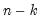

|
|
|
components corresponding to the
elements in output_list, up to the total number of series in the group.
rather than ).
You may change the scaling for the normalized components so that the cross-products equal 1, using the cpnorm option:See “Saving Component Scores” for further discussion. See Matrix::pcomp for tools to display the principal components results for the matrix.